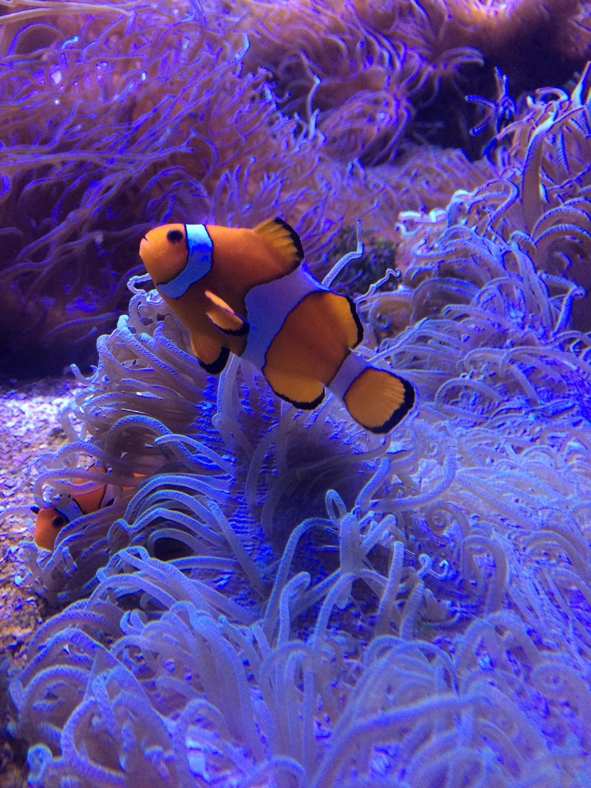
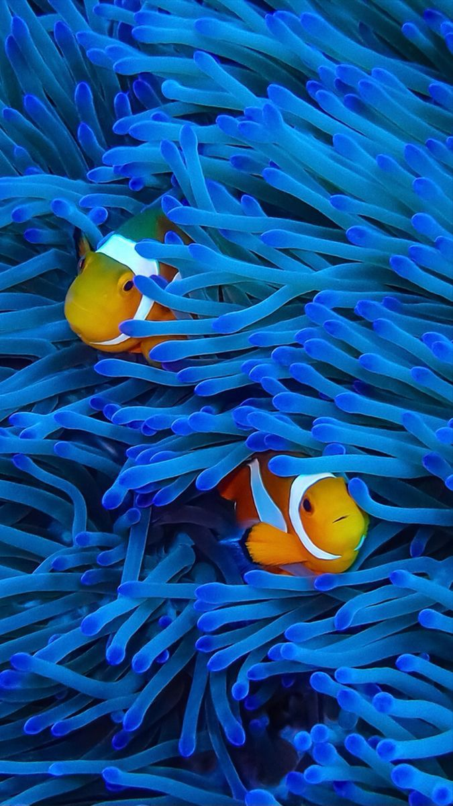
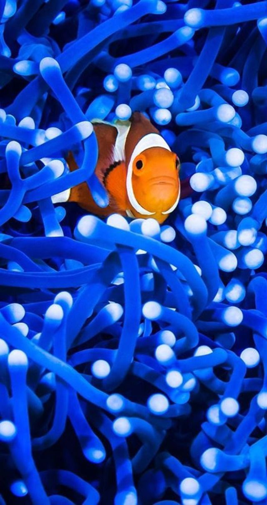

Home
Clownfish are undoubtedly the most sought-after species in the realm of saltwater fish. They are often the primary motivation for individuals to delve into the world of saltwater aquariums. Their popularity is well-deserved, given their robust nature, compact size, striking patterns, and vibrant colors. Moreover, virtually all clownfish are now bred in captivity, a rarity in the saltwater hobby sector. Their fame was further amplified by a certain film, the name of which we shall refrain from mentioning due to legal concerns. However, there is a common issue where clownfish are typically the first inhabitants of a new saltwater aquarium. This practice is not ideal as clownfish tend to be the most aggressive species in these tanks, and ideally, they should be introduced last. The optimal approach is to add fish in ascending order of aggression. This allows the less aggressive fish to acclimate, begin feeding, and truly settle in before the introduction of more aggressive species. This strategy prevents the more aggressive fish from exhibiting overt aggression towards new arrivals or intimidating less aggressive fish with their mere presence, even if they are not directly aggressive.
  